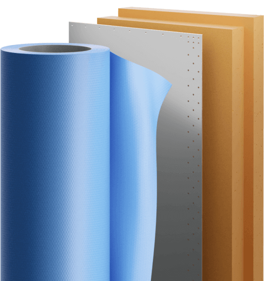

Этап 1
Закупка листового металлопроката
Мы находимся в крепких партнерских отношениях с НЛМК, ММК и Северсталь. Это лидеры российской металлургии и качество их сталей не вызывает сомнений, соответствует ГОСТам и особенностям эксплуатации в России, местами очень суровой.
Этап 2
Формообразование стали
На собственном заводе обрезаем под проектные размеры, создаем отверстия для болтов и придаем стальным листам нужный радиус кривизны.
Этап 3
Цинкование углеродистой стали
Производим цинкование нашей стали на ближайшем к вам заводе для экономии бюджета. Контролируем процесс, чтобы гарантировать защиту резервуара от коррозии.
01
Сопровождаем цинкование
На заводе по цинкованию мы сами осуществляем распаковку металла, сопровождаем его строповку и следим за температурным режимом в течение технологического процесса цинкования
02
Принимаем и тестируем
Принимаем металл и тестируем цинковое покрытие на предмет соответсвия ГОСТ 9.307 (тестирование толщины покрытия и визуальная дефектоскопия на однородность и пористость)
03
Контролируем упаковку
Контролируем упаковку металла по ГОСТ 7566 - во избежание трения листов и нарушения целостности цинкового покрытия, после чего отправляем металл на площадку строительства

Коррозионно-стойкая сталь минует 3 этап
Резервуарные металлоконструкции из коррозионно-стойкой стали не требуют цинкования. Поэтому они минуют 3-й этап и отгружаются сразу на площадку строительства совместно со всеми комплектующими.
Этап 4
Изготовление мембранного вкладыша
Раскраиваем полимерный армированный материал, склеиваем, тестируем. Гарантируем 100%-ю герметичность и высокую прочность на разрыв, сравнимую с прочностью стали.
01
Раскраиваем
В соответствии с полезным объемом хранения раскраиваем полимерный армированный материал мембраны
02
Склеиваем
Склеиваем мембрану на высокоточном оборудовании по технологии двойного шва на сдвиг, тем самым обеспечивая абсолютную герметичность
03
Тестируем
Проводим тщательное финишное тестирование готовой цилиндрической оболочки на герметичность и прочность на разрыв
Этап 5
Приемка всех компонентов на объекте
На вашем объекте, где планируется смонтировать резервуары (а также элементы отраслевого решения), мы принимаем все части комплекта и проверяем их качество.

14 дней
в среднем длится процесс от начала производства до начала монтажа
Гарантии качества
Контроль соответствия документации
Система менеджмента качества B•STEEL гарантирует, что качество выпускаемой продукции соответствует требованиям проектной документации. Гарантии обеспечивают:
01
Система
ответственности
ответственности
Высокая квалификация сотрудников в сочетании с четкой системой ответственности - залог качественного производства
02
Документация
всегда под рукой
всегда под рукой
Вся конструкторская, технологическая, нормативная и СМК документация о требованиях к качеству — всегда имеется на рабочих местах
03
Обеспечение оборудованием
Необходимое оборудование, оснастка и инструменты поддерживаются в необходимом количестве и надлежащем состоянии
04
Контролирующие испытания
Качество выпускаемой продукции контролируется на каждом этапе производства посредством измерений и испытаний